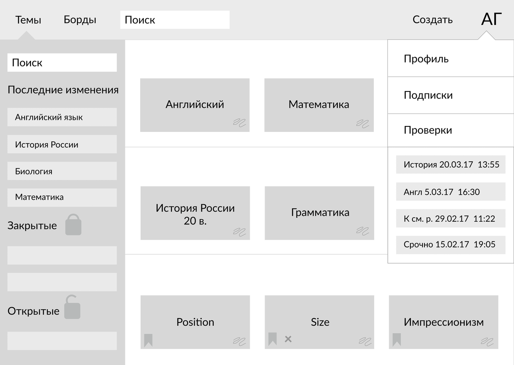
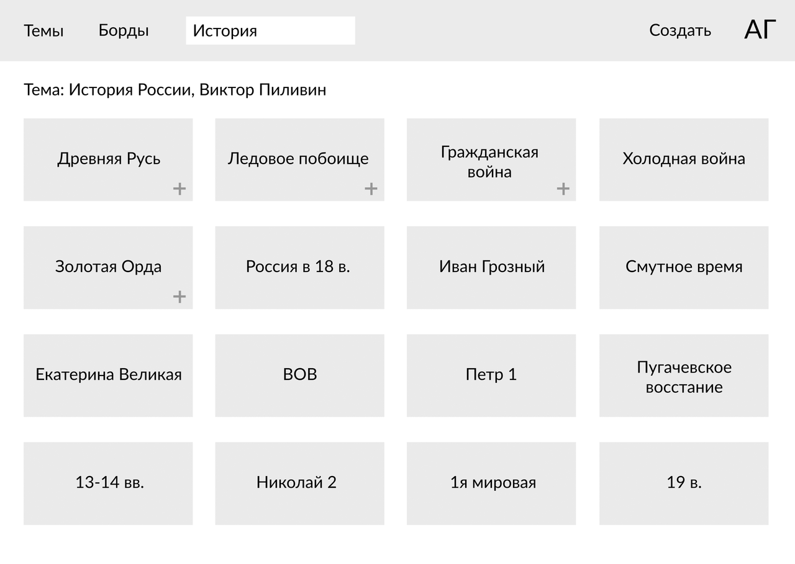

Карточки
Сервис, функционал которого будет основан на принципе флеш-карточек и сделает подготовку к экзаменам, изучение иностранных языков более эффективными и быстрыми.
Проблема
Человеческий мозг устроен так, что он лучше запоминает информацию, если обращается к ней несколько раз в течение достаточно длительного времени, причём между периодами обращения должны быть периоды покоя. Но как мы все (или почти все) привыкли учиться? В ночь перед экзаменом мы выходим на неравный бой с грудой учебников и конспектов. Нет, при доле везения, мы утром хорошо сдадим этот предмет, потому что прочитанная информация будет храниться в нашей краткосрочной памяти, откуда добыть её нам не составляет труда.
Но переходит ли полученная таким образом информация в долгосрочную память? Увы, но нет. Мозговой штурм хорош для генерации новой идеи, но не для запоминания чего-либо. Именно поэтому мы часто сталкиваемся с ситуацией, когда, казалось бы, школьники и студенты всё выучили, всё сдали, а через полгода не помнят ничего. С чем это связано? Как раз с тем, что мозг не способен полноценно усваивать и надолго запоминать информацию, полученную в результате краткосрочного, одноразового, пусть и интенсивного, усилия. Поэтому, когда перед нами встаёт задача по запоминанию любого хоть сколько-нибудь обширного массива данных, мы должны к решению этой задачи подходить с учётом того, как работает наш мозг и наша долговременная память.
Целевая аудитория
Наша целевая аудитория - это студенты, школьники и просто заинтересованные в самообразовании люди. Те, кто ценит свое время, имеет визуальную память (а таких большинство) и регулярно занимается изучением новых иностранных слов, произведений искусства, профессиональных терминов и т.д.
Решение
Существует так называемая система Лейтнера. Это широко используемый метод для эффективного запоминания и повторения с помощью флэш-карточек, предложенный немецким ученым и журналистом Себастьяном Лейтнером в 70-е годы XX-го века. Эта система — простое применение принципа интервальных повторений, где карточки повторяются через увеличивающиеся интервалы. В этом методе так называемые флеш-карточки рассортированы в группы в зависимости от того, как хорошо ученик усвоил информацию на каждой карточке. Например, при изучении иностранного языка ученик пытается вспомнить значение слова, написанного на флеш-карточке. Если он вспоминает его, то карточка перекладывается в следующую группу. Если же нет, то карточка возвращается в первую группу. Каждая следующая группа повторяется через увеличивающийся интервал. Данный метод может использоваться как для изучения слов иностранного языка, так и запоминания другой информации.
Таким образом, мы хотим создать удобный сервис, функционал которого будет основан на принципе флеш-карточек и сделает подготовку к экзаменам, изучение иностранных языков более эффективными и быстрыми.Таким образом, мы хотим создать удобный сервис, функционал которого будет основан на принципе флеш-карточек и сделает подготовку к экзаменам, изучение иностранных языков более эффективными и быстрыми.
Риски
Возможно, окажется трудным сделать удобный сервис для всех, продумать структуру так, чтобы пользователю было понятно интуитивно, как пользоваться продуктом.
Команда
Исполнителями проекта являются Гордеева Алиса и Коробкова Юлия.
Технологии, которые будут использованы во время работы: sketch app, пакет adobe, trello - из инструментов, Ruby on Rails, html/css, Javascript и различные библиотеки - в программировании.
Простые задачи будут распределяться между исполнителями по ходу работы, сложные будут решаться вместе.